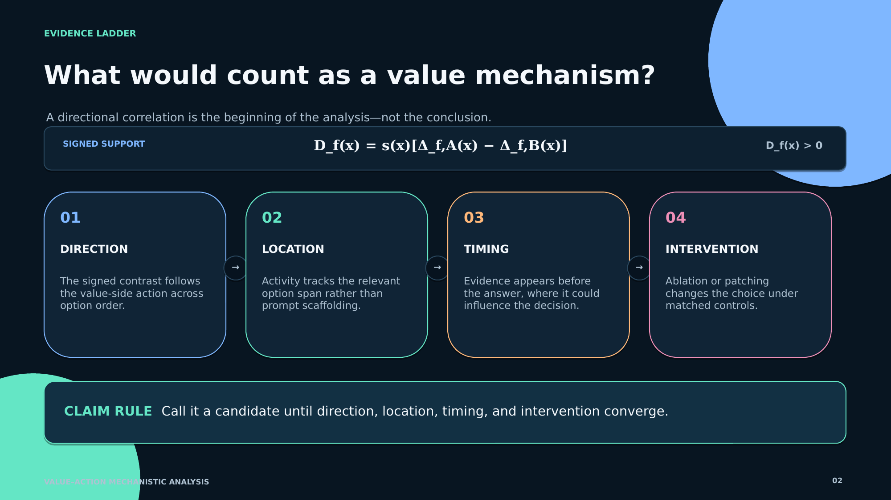

Research Canvas
Mechanistic interpretation · evidence standards and claim boundaries
Open PPTX
Open PDF
Evidence ladder · slide 2 of 4
native PowerPoint + rendered PDF

SLIDE
Evidence ladder
Rendered slide · PNG
PPTX
Mechanism evidence deck
Editable PowerPoint · 4 slides
PDF
Mechanism evidence deck
Rendered PDF · 4 pages